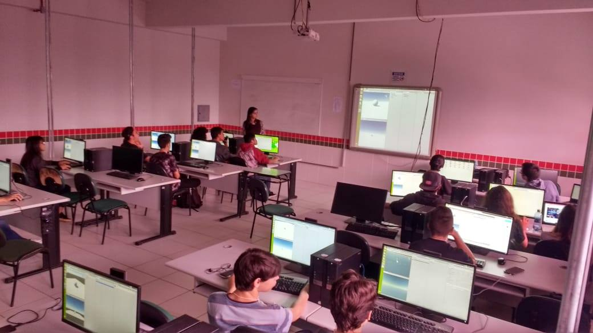

Instituto Federal do Paraná
Campus Paranaguá
Cursos
Ensino Médio Integrado
Técnico em Informática
Técnico em Mecânica
Técnico em Meio Ambiente
Ensino Superior
Licenciatura em Ciências Sociais
Licenciatura em Física
Tecnologia em Análise e Desenvolvimento de Sistemas
Tecnologia em Gestão Ambiental
Tecnologia em Manutenção Industrial
Especialização
Especialização em Gestão Ambiental
Especialização em Matemática Computacional
Mestrado
Mestrado em Ciência, Tecnologia e Sociedade (PPGCTS IFPR)
Proeja
Auxiliar em Agroecologia
Defensores Populares

Desenvolvido por: Bill Gates